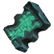
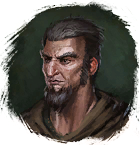
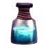

Ключ к библиотеке Клавдия
Предметы / С заданий
Открыть в интерактивной вики →
| Вес | 1 |
|---|
Описание
Табличка от чародея

Гарсум, благодаря которой вы откроете место, куда сможете поместить
Остатки магии, которые помогут вам попасть в библиотеку Клавдия. Ищите место для таблички недалеко от врат в библиотеку.Где найти
- Замок Гастельхоф — путь: Посад → Замок Гастельхоф